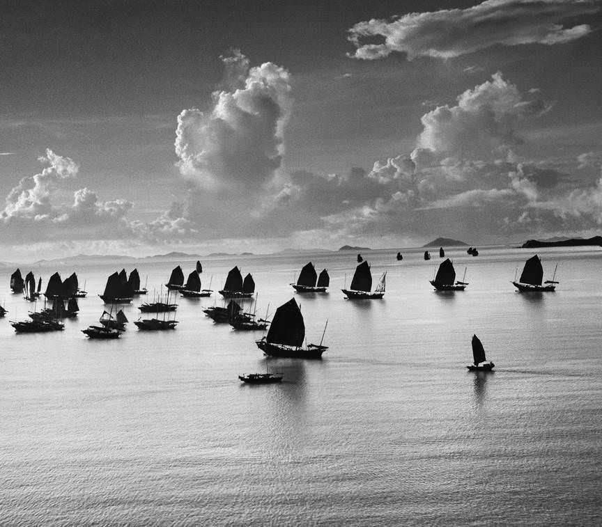

Posted on 2016-05-23 · 10 min read · Switzerland · Photos · Werner Bischof · Sixteen
Contents
2016 marks the centenary of the birth of Werner Bischof, the talented Magnum photojournalist who died in Peru in 1954, aged 38. He travelled widely, making the most of an incredible talent for photography. After the second world war, this led him all over Europe to document its aftermath. As the cold war began, Bischof found himself documenting events further afield.
We saw two exhibitions of his photography at the Musée de l’Elysée in Lausanne. “Point of View” explores his international work spanning the years 1945 to 1954. “Helvetica” explores his earlier work while isolated from travel in Switzerland during the second world war.
Point of View
“Point of View” is a retrospective of his Magnum work. It works backward from photos that he took in Peru in the weeks before his road accident, with rooms divided into continents. 1953-54 features photos from the Americas, 1953-1950 photos from Asia, and 1945-1950 photos from Europe. In each room there is either rarely seen or previously unseen work. This includes a large slideshow of unpublished pictures from North and South America, a documentary about his first photography exhibition in Zurich featuring photos from India and Japan, and in the European room a large number of contact sheets.
Contact sheets are a direct print made from a roll or sequence of images of film. Before digital photography they were an important part of the photographer’s art as it enabled potential clients to quickly look through and select their best work. A lot of the European contact sheets were clearly used to sell pictures to different photo journals as some photos often appeared on more than one contact sheet.
Helvetica
Helvetica is a collection of photos, photograms and contact sheets from the time Bischof spent in Switzerland as a young photographer. This exhibition was the first chance to see many of these pieces. It was a small collection, which was understandable, but the presentation was rather disappointing. It was contained wholly within the European section of the Point of View show and seemed quite banal in contrast to the post-war material. On further reflection I think the Helvetica pieces were very interesting but at the time the poor staging at the Elysée undermined this.
A note on photography exhibitions. Some photos.
It might be odd for me to say this given how these exhibitions were the main reason we went to Switzerland when we did but I don’t think it is as important to see photos in the flesh as it is to see painting or sculpture. When you see paintings up close you can see the brushstrokes and other evidence of artistry. It is possible to reproduce a large extent of the artistry involved in a great photo in a book. However, it was a pleasant experience to see all the photos together in a gallery setting rather than peering at them in a tabletop book. What we gained in Lausanne was the context for the work and a chance to linger long over each one.
I include a few of Bischof’s photographs that I was able to find (of sufficient quality) online. However, I can’t say with certainty that these digital reproductions are as good as seeing the real thing. There is something about properly developed photos and no matter how good a screen you have there will always be imperfections in the way that screen reproduces a photograph. Go see an exhibition or failing that, find a book. His work is shown a lot and there are also numerous books, including his excellent entry in the Phaidon 55 series.
Nevertheless I think it is important to include some of the photographs we saw. This is because these photographs and their artistry are important. Not only because of what they describe, but also how they are constructed. To discuss this (even in my cack-handed way) it is necessary to include some of them with this post. I guess this is a long-winded way of claiming fair use.
The second world war prevented Bischof from taking up a photography degree in Paris. He whiled away the war years with advertorial work and abstract photographic experiments. One example is this nude, which uses light to create markings and shapes over the body of the subject. Other studies in this period include mountains, plants, photograms, and more work involving models. Another nude adorns the leaflets advertising the show we saw.
It is telling that Helvetica is the least interesting part of the show. This could be because the exhibition sequences the photos in reverse chronological order. I believe this was a mistake. It denies viewers the opportunity to see how the abstract work fed into his later photojournalism. Because of this, I’ve presented this selection of photos in chronological order (as best I can).
Bischof’s travels around Europe between 1946 and 1950 gave him the opportunity take photographs that tell powerful stories. Those stories are rooted in the tragic impact of the second world war throughout the whole of Europe.
The photograph of the boys sweeping up in the chateau repurposed as a grain store captured my imagination. What do the boys think of the grandiose room they are sweeping up in? What is more valuable to them? The chandelier or the grain? What have those boys seen in the war? What does the future hold for them? A single photograph can introduce so many stories and ask so many questions.
The clever picture of the Reichstag juxtaposes the building’s bombed out domed roof with an abandoned bullet-ridden helmet. It compares and contrasts the impact of the war on soldiers and the cities they are fighting for.
The photographs from Hungary show the far-reaching spread of the privations of war and its aftermath. The children are on a Red Cross respite train, these were laid on to help children recover in rural areas from the stresses of war. You can see how uncertainty about the future haunts the gaze of these children as they stare from the windows. It captures the potential for war’s traumas to echo down through generations.
We often think of adults as more resilient but there’s a strong sense of vulnerability about the elder gentlemen in his photograph taken in the inn. There’s a sense that the group is huddling together to exclude the outside world and the gaze of the photographer, taking refuge in the time honoured tradition of boozing together.
The photographs from India are wonderful. They’re not necessarily of wonderful things, but they are amazing photographs. The light completely changes as you might expect in a different part of the world. The stories remain however, and what stories they are. The first of the two that I managed to find online echoes the grain silo picture: is the seeming glee on the children’s faces due to the arrival of the grain truck or simply the joy of running? You can look across the children and see the whole gamut between these extremes. There is the same mixture of uncertainty and curiosity in the faces as those that peered out of the window of Hungarian Red Cross train.
The photograph of the women walking in front of the steelworks brings out another theme in Bischof’s work, that of the collision between tradition and modernity. We can say the same about the picture of the Japanese dancers (1952). Here the juxtaposition of old and new manifests in small details - the calendar with western numerals and the women’s makeup, more suggestive of showgirls than geishas.
Imagine how striking these photographs were in the 1950s. While the world was smaller than it had ever been, to many people it was still huge and unfamiliar. Pictures from India and Japan may as well have been of another planet. Even after the war, the world was still fraught with dangers. Despite post-war regeneration, there were still threats of disease, famine and of future wars with an added nuclear dimension.

The photograph Bischof took in the garden of the Meiji temple is one of his most famous and with good reason. There is something serene about its composition and how it captures the beauty of this setting. Even today it feels almost like an archetypal image of Japanese culture. There’s no overt juxtaposition of themes or storytelling aspect, it’s just a moment of beauty.
The same could be said for the photograph of the junks in Hong Kong harbour. Bischof excludes all modernity from the frame, capturing the serenity of seeing these traditional boats at sail. There’s no more to it than that. Sometimes a great picture is just a great picture. (Even though this digital version is cropped and looks better in person.)
Around this time even Bischof’s more political and journalistic photographs were masterful compositions. He skewers the absurdity of the Korean prisoner of war camp. Grown men kept prisoner in their homeland trapped by ideology and drying their washing on the barbed wire. The image of the Cambodian farmer with the parasol is also a delight. I like how he seems to have more of a hold on his beautiful parasol than either of his cows.
Bischof visited the USA in 1953. The pictures he took include the only colour photographs in the exhibition. In many of these Bischof takes an outsider perspective. His camera looks down on parking lots from high skyscrapers and scopes out unusual sights. Cars parked on rooftops forming patterns. Rears of cars poking out of the windows of a strange garage. A man doused in orange paint coming down from the Golden Gate Bridge. Each captures an unusual moment, one that you might never have thought about until seeing the photograph.
The exhibition featured many photographs from this period in which Bischof continued to explore the tension between new technology and old beliefs. One of my favourites, which I have not found online, was of a pair of nuns standing next to an automatic ticket machine in a bus station. The nuns laugh together and a sign indicates that the ticket machine is closed. It might not sound like much but for me it articulated a crossing point between our old community ways (often enforced by religion) and the more remote modern life with fewer interpersonal reactions. That Bischof selected the precise moment that provokes these thoughts in me over sixty years later speaks to his ability as a photographer.
I visited Peru and Machu Picchu almost sixty years after Werner Bischof. Hiram Bingham “rediscovered” Machu Picchu in 1911 and it was not until the seventies that the Peruvian government encouraged tourism to the area. So when Bischof visited in 1954, the site was not the tourist trap it is today. The pictures he took of Machu Picchu and the surrounding villages were as much of new and exciting places as those he took in India and the far east a few years earlier. In fact the photo of the site on Wikipedia is Werner Bischof’s picture. I enjoyed comparing his pictures to my own - his are way better! (And he’d hiked there along a far less developed version of the Inca trail!)
But you can’t look at the photographs from Peru without feeling some sadness. They were his last. Bischof and his travel companions had pressed on with their journey despite having trouble with their vehicle. It was holy week - there are lots of photos of the pilgrims - and they were unable to find a mechanic to fix the the vehicle. A few days later Bischof died with two other passengers when their car fell off a cliff on a mountain road.
This tragic event robbed the world of a great photographer. These exhibitions show that Werner Bischof left a body of work to celebrate and it is sad that we did not get to see more. His work prompted my interest in how the second world war became the cold war. Even now it shows how we as a world are all interconnected and that every small story has a part to play in the wider whole.
See Also
- Lausanne, Switzerland, March 2016
- Paul McAuley, Something Coming Through
- Album Digest, April 2016
- The Orb - Alpine EP
- Album Digest, David Bowie RIP